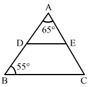
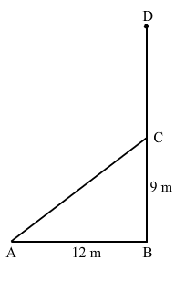
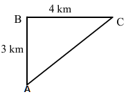

Question:1
In a ∆ABC, if ∠A = 72° and ∠B = 63°, find ∠C.
Solution:
Sum of the angles of a triangle is 180°.
Hence, ∠C measures 45°.
Question:2
In a ∆DEF, if ∠E = 105° and ∠F = 40°, find ∠D.
Solution:
Sum of the angles of any triangle is 180°.
In ∆DEF:
Question:3
In a ∆XYZ, if ∠X = 90° and ∠Z = 48°, find ∠Y.
Solution:
Sum of the angles of any triangle is 180°.
In ∆XYZ:
Question:4
Find the angles of a triangle which are in the ratio 4 : 3 : 2.
Solution:
Suppose the angles of the triangle are (4x)o, (3x)o and (2x)o.
Sum of the angles of any triangle is 180o.
∴ 4x + 3x + 2x = 180
9x = 180
x = 20
Question:5
One of the acute angles of a right triangle is 36°. find the other.
Solution:
Sum of the angles of a triangle is 180°.
Suppose the other angle measures x.
It is a right angle triangle. Hence, one of the angle is 90°.
Hence, the other angle measures 54°.
Question:6
The acute angles of a right triangle are in the ratio 2 : 1. Find each of these angles.
Solution:
Suppose the acute angles are (2x)° and (x)°
Sum of the angles of any triangle is 180°
∴ 2x+x+ 90
(3x) = 180-90
(3x) = 90
x = 30
Question:7
One of the angles of a triangle is 100° and the other two angles are equal. Find each of the equal angles.
Solution:
The other two angles are equal. Let one of these angles be x°.
Sum of angles of any triangle is 180°.
∴ x + x+ 100 = 180
2x = 80
x = 40
Hence, the equal angles of the triangle are 40° each.
Question:8
Each of the two equal angles of an isosceles triangle is twice the third angle. Find the angles of the triangle.
Solution:
Suppose the third angle of the isosceles triangle is xo.
Then, the two equal angles are (2x)o and (2x)o.
Sum of the angles of any triangle is 180o.
∴ 2x +2x+ x= 180
5x = 180
x = 36
Hence, the angles of the triangle are .
Question:9
If one angle of a triangle is equal to the sum of the other two, show that the triangle is right-angled.
Solution:
(Sum of the angles of a triangle is 180°)
Hence, the triangle ABC is right angled at A.
Question:10
In a ∆ABC, if 2∠A = 3∠B = 6∠C, calculate ∠A, ∠B and ∠C.
Solution:
Suppose: 2∠A = 3∠B = 6∠C = x°
Then, ∠A =
°
Sum of the angles of any triangle is 180°.
∠A +∠B +∠C = 180
Question:11
What is the measure of each angle of an equilateral triangle?
Solution:
We know that the angles of an equilateral triangle are equal.
Let the measure of each angle of an equilateral triangle be x°.
∴ x + x + x = 180
x =
Hence, the measure of each angle of an equilateral triangle is .
Question:12
In the given figure, DE || BC. If ∠A = 65° and ∠B° = 55, find
(i) ∠ADE
(ii) ∠AED
(iii) ∠C

Solution:
(i)
(Corresponding angles)
(ii) Sum of the angles of any triangle is 180°.
DE || BC
(corresponding angles)
(iii) We have found in point (ii) that
Question:13
Can a triangle have
(i) two right angles?
(ii) two obtuse angles?
(iii) two acute angles?
(iv) all angles more than 60°?
(v) all angles less than 60°?
(vi) al angles equal to 60°?
Solution:
(i) No. This is because the sum of all the angles is 180°.
(ii) No. This is because a triangle can only have one obtuse angle.
(iii) Yes
(iv) No. This is because the sum of the angles cannot be more than 180°.
(v) No. This is because one angle has to be more than 60° as the sum of all angles is always 180°.
(vi) Yes, it will be an equilateral triangle.
Question:14
Answer the following in 'Yes' or 'No'.
(i) Can an isosceles triangle be a right triangle?
(ii) Can a right triangle be a scalene triangle?
(iii) Can a right triangle be an equilateral triangle?
(iv) Can an obtuse triangle be an isosceles triangle?
Solution:
(i) Yes, it will be an isosceles right triangle.
(ii) Yes, a right triangle can have all sides of different measures. For example, 3, 4 and 5 are the sides of a scalene right triangle.
(iii) No, it cannot be an equilateral triangle since the hypotenuse square will be the sum of the square of the other two sides.
(iii) Yes, if an obtuse triangle has an obtuse angle of 120° and the other two angles of 30° each, then it will be an isosceles triangle.
Question:15
Fill in the blanks:
(i) A right triangle cannot have an ...... angle.
(ii) The acute angles of a right triangle are ...... .
(iii) Each acute angle of an isosceles right triangle measures ...... .
(iv) Each angle of an equilateral triangle measures ...... .
(v) The side opposite the right angle of a right triangle is called ...... .
(vi) The sum of the lengths of the sides of a triangle is called its...... .
Solution:
(i) obtuse (since the sum of the other two angles of the right triangle is 90o)
(ii) equal to the sum of 90o
(iii) 45o (since their sum is equal to 90o)
(iv) 60o
(v) a hypotenuse
(vi) perimeter
Question:16
In the figure given alongside, find the measure of ∠ACD.
Solution:
We know that the exterior angle of a triangle is equal to the sum of the interior opposite angles.
Question:17
In the figure given alongside, find the values of x and y.
Solution:
We know that the exterior angle of a triangle is equal to the sum of the interior opposite angles.
Sum of the angles in any triangle is 180o.
Question:18
In the figure given alongside, find the values of x and y.
Solution:
We know that the exterior angle of a triangle is equal to the sum of the interior opposite angles.
Also, sum of the angles in any triangle is 180.
∴ x= 33
y =115
Question:19
An exterior angle of a triangle measures 110° and its interior opposite angles are in the ratio 2 : 3. Find the angles of the triangle.
Solution:
Suppose the interior opposite angles are (2x)° and (3x)°.
We know that the exterior angle of a triangle is equal to the sum of the interior opposite angles.
∴ 3x +2x= 110
x = 22
The interior opposite angles are 44° and 66°.
Suppose the third angle of the triangle is y°.
Now, sum of the angles in any triangle is 180°.
∴ 44 + 66 + y = 180
y = 70
Hence, the angles of the triangle are 44°, 66° and 70°.
Question:20
An exterior angle of a triangle is 100° and its interior opposite angles are equal to each other. Find the measure of each angle of the triangle.
Solution:
Suppose the interior opposite angles of an exterior angle 100o are xo and xo.
We know that the exterior angle of a triangle is equal to the sum of the interior opposite angles.
∴ x + x = 100
2x= 100
x= 50
Also, sum of the angles of any triangle is 180°.
Let the measure of the third angle be y°.
∴ x + x + y = 180
50 + 50 + y= 180
y = 80
Hence, the angles are of the measures 50°, 50° and 80°.
Question:21
In the figure given alongside, find:
(i) ∠ACD
(ii) ∠AED
Solution:
We know that the exterior angle of a triangle is equal to the sum of the interior opposite angles.
In ABC:
Question:22
In the figure given alongside, find:
(i) ∠ACD
(ii) ∠ADC
(iii) ∠DAE
Solution:
Sum of the angles of a triangle is 180.
We know that the exterior angle of a triangle is equal to the sum of the interior opposite angles.
Question:23
In the figure given alongside, x : y = 2 : 3 and ∠ACD = 130°.
Find the values of x, y and z.
Solution:
We know that the exterior angle of a triangle is equal to the sum of the interior opposite angles.
∴
x+ y = 130
Also, sum of the angles in any triangle is 180
∴ x+ y + z = 180
z= 180- 78 - 52
z= 50
Question:24
Is it possible to draw a triangle, the lengths of whose sides are given below?
(i) 1 cm, 1 cm, 1 cm
(ii) 2 cm, 3 cm, 4 cm
(iii) 7 cm, 8 cm, 15 cm
(iv) 3.4 cm, 2.1 cm, 5.3 cm
(v) 6 cm, 7 cm, 14 cm
Solution:
(i) Consider numbers 1, 1 and 1.
Clearly, 1 + 1 1
1 + 1 1
1 + 1 1
Thus, the sum of any two sides is greater than the third side.
Hence, it is possible to draw a triangle having sides 1 cm, 1 cm and 1 cm.
(ii)
Clearly, 2 + 3 4
3 + 4 2
2+ 4 3
Thus, the sum of any two sides is greater than the third side.
Hence, it is possible to a draw triangle having sides 2 cm, 3 cm and 4 cm.
(iii)
Clearly, 7 + 8 = 15
Thus, the sum of these two numbers is not greater than the third number.
Hence, it is not possible to draw a triangle having sides 7 cm, 8 cm and 15 cm.
(iv) Consider the numbers 3.4, 2.1 and 5.3.
Clearly: 3.4 + 2.1 5.3
5.3 + 2.1 3.4
5.3 + 3.4 2.1
Thus, the sum of any two sides is greater than the third side.
Hence, it is possible to draw a triangle having sides 3.4 cm, 2.1 cm and 5.3 cm.
(v) Consider the numbers 6, 7 and 14.
Clearly, 6+7 14
Thus, the sum of these two numbers is not greater than the third number.
Hence, it is not possible to draw a triangle having sides 6 cm, 7 cm and 14 cm.
Question:25
Two sides of a triangle are 5 cm and 9 cm long. What can be the length of its third side?
Solution:
Let the length of the third side be x cm.
Sum of any two sides of a triangle is greater than the third side.
∴ 5 + 9 x
Hence, the length of the third side must be less than 14 cm.
Question:26
If P is a point in the interior of ∆ABC then fill in the blanks with > or < or =.
(i) PA + PB ...... AB
(ii) PB + PC ...... BC
(iii) AC ...... PA + PC
Solution:
(i)
(ii)
(iii)
The reason for the above three is that the sum of any two sides of a triangle is greater than the third side.
Question:27
AM is a median of ∆ABC. Prove that (AB + BC + CA) > 2AM.
Solution:
Sum of any two sides of a triangle is greater than the third side.
In AMB:
AB + BM >AM........(i)
In AMC:
AC + CM >AM.........(ii)
Adding the above two equation:
AB + BM + AC + CM >AM + AM
AB + BC + AC > 2AM
Hence, proved.
Question:28
In the given figure. P is a point on the side BC of ∆ABC. Proce that (AB + BC + CA) > 2AP.
Figure
Solution:
Sum of any two sides of a triangle is greater than the third side.
Hence, proved.
Question:29
ABCD is quadrilateral.
Prove that (AB + BC + CD + DA) > (AC + BD)
Figure
Solution:
Sum of any two sides of a triangle is greater than the third side.
In ABC:
AB + BC > AC
In ADC:
CD + DA > AC
Adding the above two:
AB + BC + CD + DA > 2 AC ... (i)
In ADB:
AD + AB > BD
In BDC:
CD + BC > BD
Adding the above two:
AB + BC + CD + DA >2 BD ... (ii)
Adding equation (i) and (ii):
AB + BC + CD + DA+AB + BC + CD + DA> 2(AC+BD)
=> 2(AB + BC + CD + DA)>2(AC+BD)
=> AB + BC + CD + DA > AC+BD
Question:30
If O is a point in the exterior of ∆ABC, show that 2(OA + OB + OC) > (AB + BC + CA).
Figure
Solution:
We know that the sum of any two sides of a triangle is greater than the third side.
In AOB:
OA + OB > AB...........(1)
In BOC:
OB + OC > BC........................... (2)
In AOC:
OA + OC > CA.............................(3)
Adding (1), (2) and (3):
OA + OB + OB + OC + OA + OC > AB + BC + CA
2( OA + OB + OC) > AB +BC + CA
Hence, proved.
Question:31
Find the length of the hypotenuse of a right triangle, the other two sides of which measure 9 cm and 12 cm.
Solution:
Suppose the length of the hypotenuse is a cm.
Then, by Pythagoras theorem:
=
=> = 81 + 144
=> =225
=> a =
=> a= 15
Hence, the length of the hypotenuse is 15 cm.
Question:32
The hypotenuse of a right triangle is 26 cm long. If one of the remaining two sides is 10 cm long, find the length of the other side.
Solution:
Suppose the length of the other side is a cm.
Then, by Pythagoras theorem:
Hence, the length of the other side is 24 cm.
Question:33
The length of one sides of a right triangle is 4.5 cm and the length of its hypotenuse is 7.5 cm. Find the length of its third side.
Solution:
Suppose the length of the other side is a cm.
Then, by Pythagoras theorem:
Hence, the length of the other side of the triangle is 6 cm.
Question:34
The two legs of a right triangle are equal and the square of its hypotenuse is 50. Find the length of each leg.
Solution:
Suppose the length of the two legs of the right triangle are a cm and a cm.
Then, by Pythagoras theorem:
Hence, the length of each leg is 5 cm.
Question:35
The sides of a triangle measure 15 cm, 36 cm and 39 cm. Show that it is a right-angled triangle.
Solution:
The largest side of the triangle is 39 cm.
Also,
∴
Sum of the square of the two sides is equal to the square of the third side.
Hence, the triangle is right angled.
Question:36
In right ∆ABC, teh lengths of its legs are given as a = 6 cm and b = 4.5 cm. Find the length of its hypotenuse.
Solution:
Suppose the length of the hypotenuse is c cm.
Then, by Pythagoras theorem:
Hence, the length of its hypotenuse is 7.5 cm.
Question:37
The lengths of the sides of triangles are given below. Which of them are right-angled?
(i) a = 15 cm, b = 20 cm and c = 25 cm
(ii) a = 9 cm, b = 12 cm and c = 16 cm
(iii) a = 10 cm, b = 24 cm and c = 26 cm
Solution:
(i) Largest side, c = 25 cm
We have:
= 225 + 400 = 625
Also, = 625
∴ =
Hence, the given triangle is right angled using the Pythagoras theorem.
(ii) Largest side, c = 16 cm
We have:
= 81 + 144 = 225
Also, = 256
Here,
Therefore, the given triangle is not right angled.
(iii) Largest side, c = 26 cm
We have:
= 100 + 576= 676
Also, = 676
∴ =
Hence, the given triangle is right angled using the Pythagoras theorem.
Question:38
In a ∆ABC, ∠B = 35° and ∠C = 55°. Write which of the following is true:
(i) AC2 = AB2 + BC2
(ii) AB2 = BC2 + AC2
(iii) BC2 = AB2 + AC2
Solution:
We have:
∠B = 35° and ∠C = 55°
∴ ∠B = 180 - 35 -55 = 90° (since sum of the angles of any triangle is 180°)
We know that the side opposite to the right angle is the hypotenuse.
By Pythagoras theorem:
BC2 = AB2 + AC2
Hence, (iii) is true.
Question:39
A 15-m-long ladder is placed against a wall to reach a window 12 m high. Find the distance of the foot of the ladder from the wall.
Solution:
By Pythagoras theorem in ABC:
∴ x = 9 cm
Hence, the distance of the foot of the ladder from the wall is 9 cm.
Question:40
A 5-m-long ladder whan set against the wall of a house reaches a height of 4.8 m. How far is the foot of the ladder from the wall?
Solution:
Suppose the foot of the ladder is x m far from the wall.
Let the ladder is represented by AB, the height at which it reaches the wall be AC and the distance between the foot of ladder and wall be BC.
Then, by Pythagoras theorem:
Hence, the foot of the ladder is 1.4 m far from the wall.
Question:41
A tree is broken by the wind but does not separate. If the point from where it breaks is 9 m above the ground and its top touches the ground at a distance of 12 m from its foot, find out the total height of the tree before it broke.
Solution:
Let BD be the height of the tree broken at point C and suppose CD take the position CA

Now as per given conditions we have AB = 9 m , BC = 12 m
By Pythagoras theorem:
Length of the tree before it broke = AC + AB
= 15 + 9
= 24 m
Question:42
Two poles, 18 m and 13 m high, stand upright in a playground. If their feet are 12 m apart, find the distance between their tops.
Solution:
Suppose, the two poles are AB and CD, having the length of 18 m and 13 m, respectively.
Distance between them, BD, is equal to 12 m.
We need to find AC.
From C, draw CEAB.
AE=AB-EB
= AB-CD (CD = EB)
= 18-13
= 5 cm
EC = BD = 12 m
Now, by Pythagoras theorem in :
Hence, the distance between their tops is 13 m.
Question:43
A man goes 35 m due west and then 12 m due north. How far is he from the starting point?
Solution:
Suppose the man starts at point A and goes 35 m towards west, say AB. He then goes 12 m north, say BC.
We need to find AC.
By Pythagoras theorem:
Hence, the man is 37 m far from the starting point.
Question:44
A man goes 3 km due north and then 4 km due east. How far is he away from his initial position?
Solution:
Suppose the man starts from A and goes 3 km north and reaches B.
He then goes 4 km towards east and reaches C.
∴ AB = 3 km
BC = 4 km
We have to find AC.
By Pythagoras theorem:
Hence, he is 5 km far from the initial position.

Question:45
Find the length of diagonal of the rectangle whose sides are 16 cm and 12 cm.
Solution:
Suppose the sides are x and y of lengths 16 cm and 12 cm, respectively.
Let the diagonal be z cm.
Clearly, the diagonal is the hypotenuse of the right triangle with legs x and y.
By Pythagoras theorem:
Hence, the length of the diagonal is 20 cm.
Question:46
Find the perimeter of the rectangle whose length is 40 cm and a diagonal is 41 cm.
Solution:
AB = 40 cm
Diagonal, AC = 41 cm
Then, by Pythagoras theorem in right :
∴ Length = 40 cm
Breadth = 9 cm
∴ Perimeter of the rectangle = 2(length + breadth)
= 2(40+9)
= 98 cm
Question:47
Find the perimeter of a rhombus, the lengths of whose diagonals are 16 cm and 30 cm.
Figure
Solution:
We know that the diagonals of a rhombus bisect each other at right angles.
Therefore, in right triangle AOB, we have:
AO = 8 cm
BO = 15 cm
By Pythagoras theorem in AOB:
Now, as we know that all sides of a rhombus are equal.
∴ Perimeter of the rhombus = 4(side)
= 4(17)
= 68 cm
Question:48
Fill in the blanks:
(i) In a right triangle, the square of the hypotenuse is equal to the ...... of the squares of the other two sides.
(ii) If the square of one side of a triangle s equal to the sum of the squares of the other two sides then the triangle is ...... .
(iii) Of all the line segments that can be drawn to a given line from a given point outside it, the ...... is the shortest.
Solution:
(i) In a right triangle, the square of the hypotenuse is equal to the sum of the squares of the other two sides.
(ii) If the square of one side of a triangle s equal to the sum of the squares of the other two sides then the triangle is right angled.
(iii) Of all the line segments that can be drawn to a given line from a given point outside it, the perpendicular is the shortest.